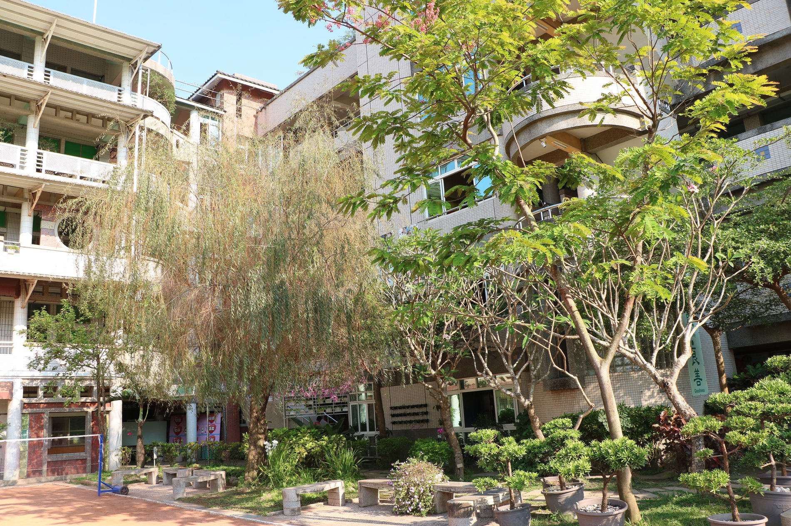
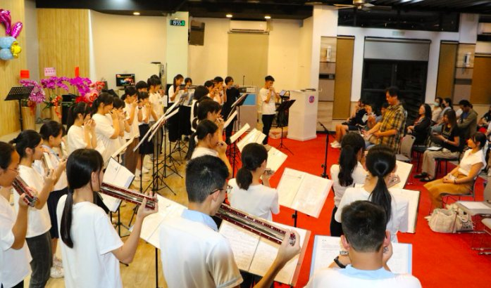
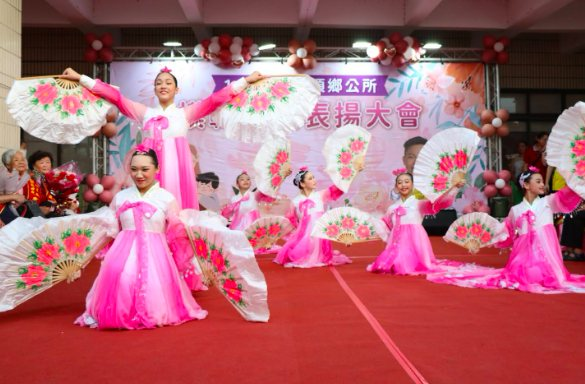
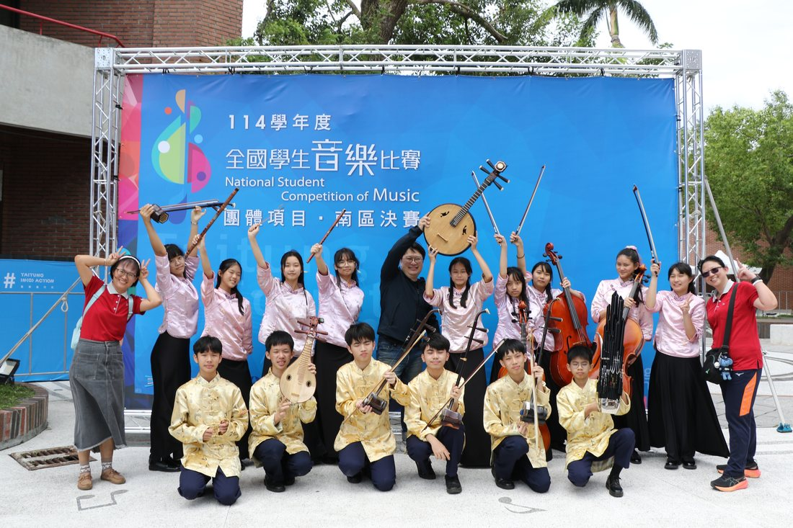
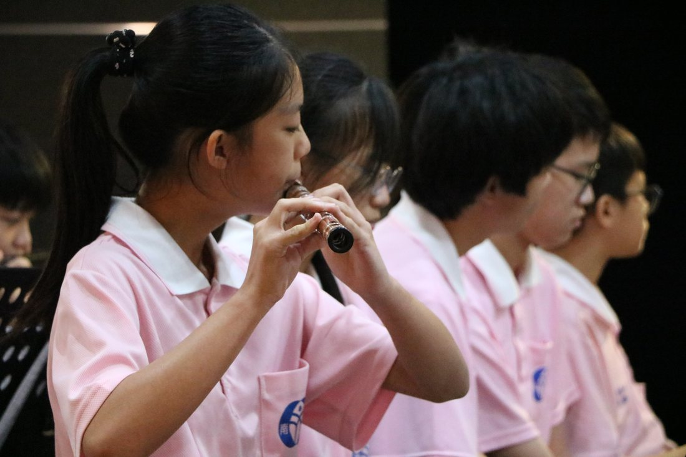
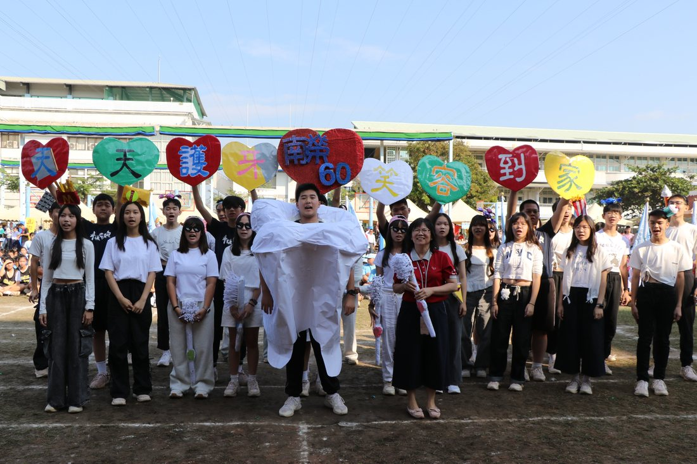
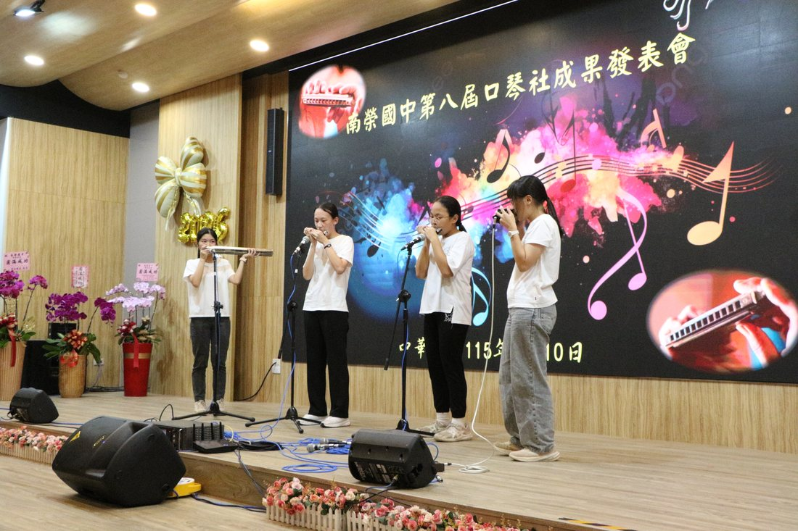

A Campus That Sings歌う学びの場노래하는 캠퍼스

A National First · October 2025国家的快挙・2025年10月국가적 쾌거 · 2025년 10월
In October 2025, the Nan Jung marching band became the first junior-high school ever invited to perform at Taiwan's National Day celebration.
One hundred and five students took the stage on the plaza before the Presidential Office in Taipei, led by conductor Chuang Feng-wu, a former chief of the Navy Band. Their program — “Southern Voices Hail the Double Tenth; Youth Dances the Nation's Glory” — wove together wind music, dance and flag work into a tribute to their homeland and to Pingtung's rich, many-cultured spirit. Nan Jung remains the only junior-high marching band still going strong across the Kaohsiung–Pingtung region.
2025年10月、南榮の行進管楽団は、台湾の国慶節（双十節）の式典に招かれた史上初の中学校となりました。
105名の生徒が、台北の総統府前広場の舞台に立ちました。指揮は元海軍軍楽隊隊長の莊峰武先生。「南境楽響 双十を頌え、栄光の国慶 青春は舞う」と題した演目は、管楽・舞踊・旗の演技を織りなし、郷土への愛と、屏東の豊かで多彩な文化への誇りを捧げました。南榮は今も、高雄・屏東地区で活動を続ける唯一の中学行進楽団です。
2025년 10월, 난룽중학교 취주악대는 대만 쌍십절(건국기념일) 경축 행사에 초청받은 최초의 중학교가 되었습니다.
전 해군 군악대장 좡펑우(莊峰武) 지휘자의 지휘 아래, 105명의 학생들이 타이베이 총통부 앞 광장 무대에 올랐습니다. “남녘의 소리, 쌍십절을 노래하다; 청춘은 나라의 영광을 춤추다”라는 제목의 공연은 관악 연주와 무용, 깃발 연기를 하나로 엮어 고향에 대한 사랑과 핑둥의 풍요롭고 다채로운 문화적 정신에 경의를 표했습니다. 난룽중학교는 오늘날까지도 가오슝-핑둥 지역에서 활동을 이어가는 유일한 중학교 취주악대입니다.
Since its earliest days, Nan Jung has believed that beauty awakens the mind. Its ensembles are among the most decorated in Taiwan — winners of three national grand prizes at the 2026 All-Taiwan Music & Dance Competition alone.
創立の頃から、南榮は「美が知性を目覚めさせる」と信じてきました。その演奏団体は台湾でも有数の実績を誇り、2026年の全国音楽舞踊コンクールだけでも3つの全国特優に輝きました。
창립 초기부터 난룽중학교는 “아름다움이 지성을 일깨운다”는 믿음을 지켜왔습니다. 학교의 예술 동아리들은 대만에서 손꼽히는 실적을 자랑하며, 2026년 전국 음악무용경연대회에서만 세 개의 전국 대상을 수상했습니다.
Junior high ever to perform at Taiwan's National Day国慶節の式典に立った史上初の中学校대만 쌍십절 경축 행사에 참가한 최초의 중학교
National "Excellence" awards for the choir合唱団の全国特優 受賞回数합창단의 전국 우수상 수상 횟수
Student clubs, many running 20+ years生徒社団。20年以上続くものも多数학생 동아리 수. 20년 이상 이어온 동아리도 다수
Outdoor Marching Band屋外マーチングバンド야외 취주악대
Founded in 1998, the marching band is Nan Jung's signature — combining music, formation and movement on the field, and a national grand-prize winner time and again. Beyond Taiwan, it took the junior-school championship at Malaysia's international marching band competition (2014) and a silver in Hong Kong — and in 2025 it made history on the National Day stage.
1998年に創設された管楽団は南榮の象徴。フィールド上で音楽・隊形・動きを融合させ、全国大会で幾度も特優に輝いてきました。海外でも、マレーシアの国際マーチングバンド大会で中学の部優勝（2014年）、香港では銀賞を獲得。そして2025年、国慶節の舞台で歴史をつくりました。
1998년에 창단된 취주악대는 난룽중학교를 상징하는 동아리로, 필드 위에서 음악과 대형, 움직임을 하나로 결합하며 전국 대회에서 여러 차례 대상을 수상해 왔습니다. 해외에서도 말레이시아 국제 취주악대 경연대회 중학부 우승(2014년)과 홍콩에서의 은상을 차지했으며, 2025년에는 쌍십절 무대에서 역사를 새로 썼습니다.

Harmonica Ensembleハーモニカ하모니카 앙상블
Nan Jung is the only junior high in Pingtung with its own harmonica ensemble. Under composer-conductor Chen Sheng-yi, its quartet took national first prize ("Excellence") for the first time in 2026. Each summer the school holds a graduation harmonica concert — now in its eighth year.
南榮は、屏東県で唯一ハーモニカ団を擁する中学校です。作曲家でもある陳晟禕先生の指揮のもと、四重奏は2026年に初めて全国特優を獲得。毎夏には卒業ハーモニカ演奏会を開き、今年で第8回を迎えました。
난룽중학교는 핑둥현에서 유일하게 자체 하모니카 앙상블을 운영하는 중학교입니다. 작곡가이자 지휘자인 천성이(陳晟禕) 선생님의 지도 아래, 사중주단은 2026년 처음으로 전국 우수상을 수상했습니다. 매년 여름에는 졸업 하모니카 연주회를 열고 있으며, 올해로 8회째를 맞이했습니다.

Choir合唱団합창단
Seven times a national "Excellence" winner, the choir sings the folk songs of Taiwan with warmth and depth. In July 2026 it shares the stage with Hungary's world-renowned Cantemus Children's Choir at the Taipei International Choral Festival.
全国特優7度の合唱団は、台湾の民謡を温かく深く歌い上げます。2026年7月には、台北国際合唱音楽祭で、世界的に著名なハンガリーのCantemus児童合唱団と同じ舞台に立ちます。
전국 우수상을 일곱 차례 수상한 합창단은 대만 민요를 따뜻하고 깊이 있게 노래합니다. 2026년 7월에는 타이베이 국제합창음악제에서 세계적으로 유명한 헝가리 칸테무스 어린이합창단과 함께 무대에 오릅니다.

Dance & Orchestra舞踊・国楽무용과 국악
The dance troupe and Chinese orchestra round out a rich artistic life. In 2026 a Nan Jung dancer took the national individual "Excellence" prize in modern dance — the fruit, she says, of "countless falls and as many times getting back up."
舞踊部と国楽団が、豊かな芸術活動を彩ります。2026年には南榮の生徒が現代舞踊の全国個人特優を受賞。それは「数えきれない転倒と、同じだけ立ち上がった」成果だと彼女は語ります。
무용단과 국악단은 난룽중학교의 풍성한 예술 활동을 더욱 다채롭게 합니다. 2026년에는 난룽중학교 학생이 현대무용 부문에서 전국 개인 우수상을 수상했는데, 본인은 이를 “셀 수 없이 넘어지고, 그만큼 다시 일어난” 결실이라고 말합니다.
Watch映像で見る영상으로 보기
Chinese Orchestra · “Dukezong”国楽合奏「独克宗」국악 합주 · “두커쭝(独克宗)”
“The Girl Who Danced Her Way to the World” · Huang Kai-hsin「踊りで世界へ歩んだ少女」黄凱欣“춤으로 세계를 향해 나아간 소녀” · 황카이신(黃凱欣)
Our Ensembles社団いろいろ다양한 동아리
On Stage舞台のうえで무대 위에서




